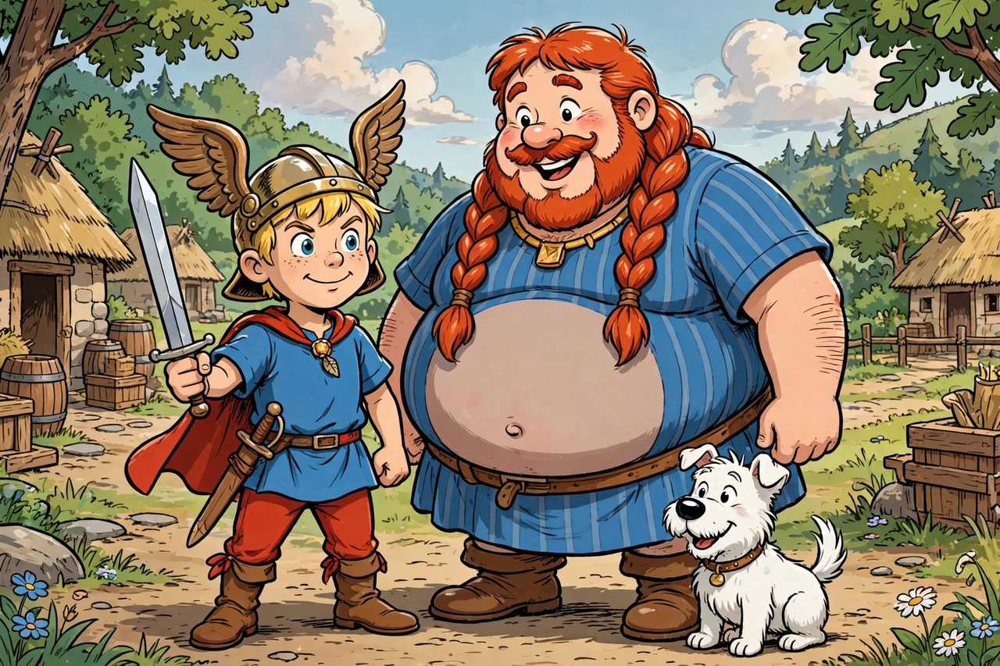

From Wikipedia, the free encyclopedia
| Asterix | |
 | |
| Created by | René Goscinny (writer) Albert Uderzo (artist) |
|---|---|
| First appearance | Pilote magazine, 29 October 1959 |
| Publisher | Dargaud, later Hachette |
| Number of albums | 41 (as of 2025) |
| Setting | A village in Armorica, Gaul, 50 BC |
Asterix (French: Astérix) is a French comic album series about a Gaulish village which, thanks to a magic potion that gives superhuman strength, resists the forces of Julius Caesar's Roman Republic in 50 BC. The series first appeared in the Franco-Belgian comics magazine Pilote on 29 October 1959. It was written by René Goscinny and illustrated by Albert Uderzo until Goscinny's death in 1977, after which Uderzo took over both roles. Since 2013 the series has been continued by writer Jean-Yves Ferri and artist Didier Conrad, and from 2023 by Fabcaro.
The protagonist, the titular character Asterix, along with his friend Obelix, has various adventures, many of which take them to far-flung corners of the ancient world. The little warrior's name derives from astérisque, the French word for the typographical asterisk symbol, and plays on the Gaulish suffix -rix ("king"), as in Vercingetorix.
The stories are set in and around a small coastal village in Armorica (Brittany) — the only place in Gaul not yet conquered by the Romans. The secret of the village's resistance is a magic potion brewed by the druid Getafix (Panoramix in French), which grants temporary superhuman strength. Obelix, who fell into the cauldron as a baby, has permanent strength and instead spends his time quarrying menhirs and eating wild boar.
The first album, Asterix the Gaul, appeared in book form in 1961. Goscinny and Uderzo produced 24 albums together before Goscinny's sudden death during a stress test in 1977. Uderzo continued alone for a further ten albums. The series has been translated into more than 100 languages and dialects, making it one of the most widely read works of French literature, and has sold several hundred million copies worldwide.
Asterix has been adapted into numerous animated and live-action films, including Asterix & Obelix: Mission Cleopatra (2002), one of the most successful French films ever made. The Parc Astérix theme park opened near Paris in 1989.